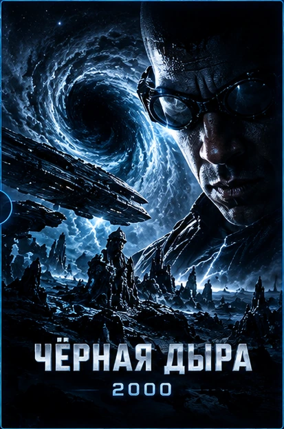
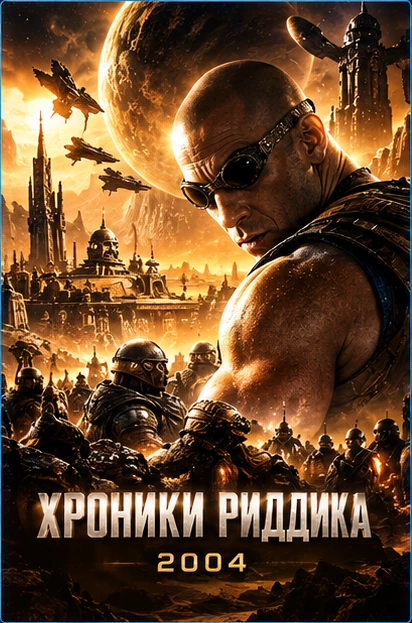
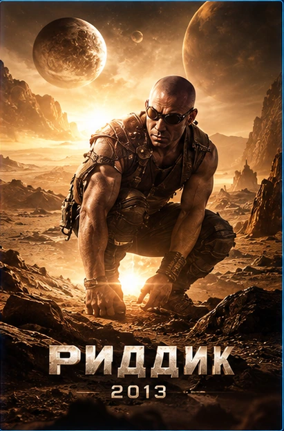
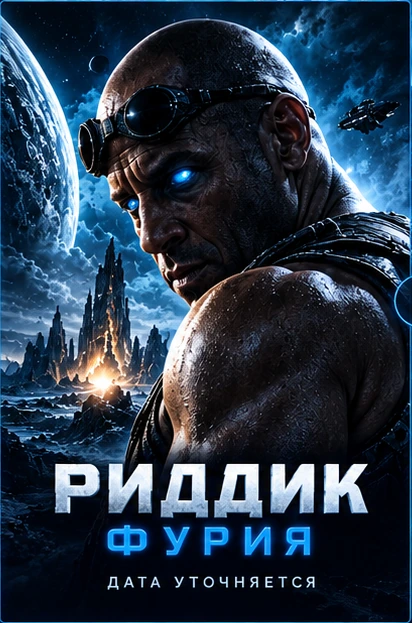

Чёрная дыра
2000 · Выживание на враждебной планете
Ф А Н - П У Т Е В О Д И Т Е Л Ь
ОТ «ЧЁРНОЙ ДЫРЫ» ДО «ФУРИИ»
Все основные фильмы, путь героя и миры далёкого будущего. Узнай, с чего начинается история Риддика.
ФАНТАСТИКА КОСМОС ВЫЖИВАНИЕ ХРОНОЛОГИЯ
НАЖМИТЕ ▶, ЧТОБЫ ОТКРЫТЬ ВИДЕО НА VK ВИДЕО
Риддик — беглец с необычайно острым зрением, привыкший выживать там, где другие не справляются. От смертельно опасной планеты в «Чёрной дыре» до столкновения с некромонгерами и возвращения к собственным корням — его история связывает несколько разных миров.
ПОРЯДОК ПРОСМОТРА
Для первого знакомства удобнее смотреть основные фильмы в порядке выхода. Так раскрываются герой, его прошлое и устройство вселенной.
Первое знакомство с Риддиком: аварийная посадка и борьба за выживание на планете с опасными ночными хищниками.
История расширяется до межпланетного конфликта с некромонгерами и загадки происхождения героя.
Возвращение к суровому выживанию: враждебная планета, охотники за головами и необходимость заключать временные союзы.
Заявленное продолжение о возвращении к родному миру. Дату выхода и подробности следует сверять с официальными анонсами.
ПУТЕВОДИТЕЛЬ
Выживание среди экстремальных условий и существ, выходящих на охоту в темноте.
Воинственная сила, чьи завоевания становятся центральной угрозой в «Хрониках Риддика».
Родной мир Риддика и ключ к его происхождению. Подробности новой истории ещё требуют официального подтверждения.
ГАЛЕРЕЯ
Шесть авторских иллюстраций по мотивам космической фантастики. Это не кадры из фильмов.
Авторские фантазийные иллюстрации для фан-сайта, не официальные кадры фильма.
ОСНОВНЫЕ ЧАСТИ

2000 · Выживание на враждебной планете

2004 · Масштабная космическая история

2013 · Охотники и опасная планета

Дата уточняется · Анонсированное продолжение
Начните с «Чёрной дыры», затем переходите к «Хроникам Риддика» и фильму «Риддик» 2013 года. Так понятнее развитие персонажа и его история. Этот сайт — самостоятельный фан-путеводитель, а не официальный ресурс киностудии.
Для первого просмотра: «Чёрная дыра» (2000), «Хроники Риддика» (2004), «Риддик» (2013).
Главного героя в основных фильмах играет Вин Дизель.
Дата премьеры требует подтверждения по официальным источникам.